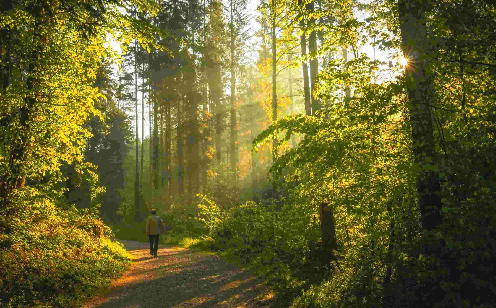

About us
Who are we?

Geal 30
Store Clerk
Gaben 48
Accountant

Rachel 35
Nurse
What do we do?
Our team are regular people with regular jobs and families, who take time on our spare time to do a little research into the global impact on the climate and environment to spread awareness and give some home tips on how to improve your carbon footprint. We hope we can give you the inspiration you need to help better the environment and our planets future.
